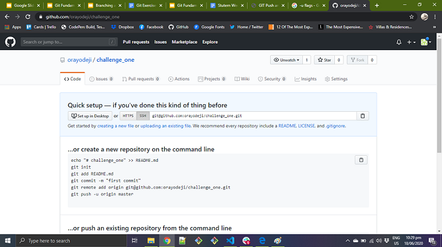
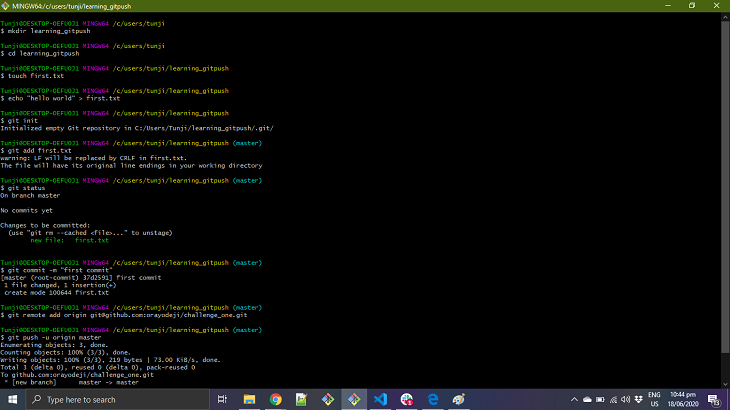
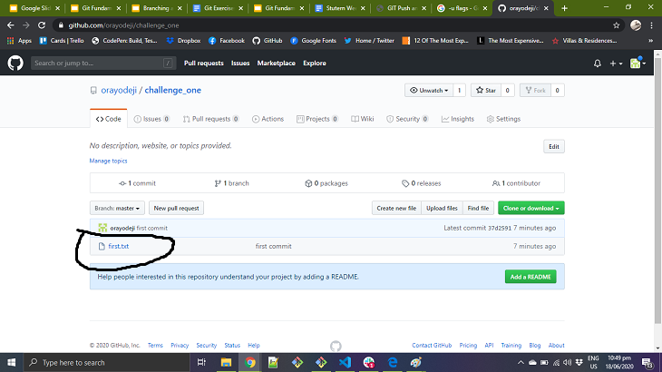

I'll be taking you on a brief summary about my favourite Git Command
The Git Push command is used to upload local repository content to a remote repository.
Pushing is how you transfer commits from your local repository to a remote repo.it's the the counterpart to git fetch, whereas fecthing imports commit to local branches, pushing exports commits to remotes branches.
Git Push is given below.
git push 'remote_name' 'branch_name'
In this tutorial, we'll be looking at how to GIT PUSH to GitHub with the following steps
The first step in Git Push is by creating a new remote repository on your GitHub account.
The next step is by moving to the specific path you want create a file you want to commit to in your desktop i.e. c/users/tunji/ and creating a folder by using the mkdir command mkdir learning_gitpush & change the directory using the cd command.
Use the git init to initialize the repository. It is used to create a new empty repository or directory consisting of files with the hidden directory. .git is created at the top level of your project.
After initializing the git repository, then You add files by using git add. command line in your bash to add all the files to the given folder & use the git statuscommand in your bash to view all files which are going to be staged to the first commit.
Then you can create a commit message by git commit -m 'your message', which adds the change to the local repository.
git commituses '-m' as a flag for a message to set the commits with the content where the full description is included, a message is written in an imperative sentence up to 50 characters long and defining "what has changed" and "why was the change made"
Copy the HTTPS or URL from the given GitHub account which is the place of the remote repository and add the URL to local repository by using git remote add origin 'your_url_name'.
Lastly, you push your local content to GitHub by using git push -u origin master. In the code, the origin is your default repository name and '-u' flag is upstream, which is equivalent to '-set-upstream.' and the master is the branch name.
Finally, after using the the git push command prompt on your Bash, you can now view your local repository on GitHub.
Thank You for taking the time going through my brief summary.